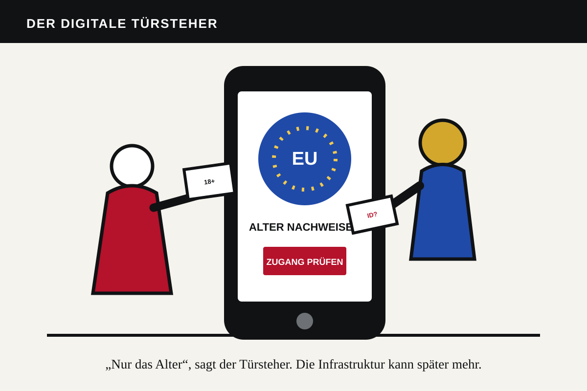

Das Gerücht war größer als der Beschluss. Ursula von der Leyen habe bestätigt, jeder EU-Bürger müsse künftig eine staatliche App benutzen, bevor er soziale Medien oder Nachrichtenseiten öffnen dürfe. So verbreitete es sich in dieser Woche. Der Satz ist falsch. Eine allgemeine Ausweispflicht für das Internet ist weder beschlossen noch in Kraft.
Richtig ist etwas anderes – und politisch bedeutend genug. Die Europäische Kommission hat eine technische Lösung zur Altersprüfung entwickelt. Seit dem 15. April 2026 ist sie nach eigenen Angaben einsatzbereit und kann von Mitgliedstaaten und Unternehmen angepasst werden. Nutzer sollen damit beweisen können, dass sie etwa über 18 sind, ohne Namen oder Geburtsdatum an die Plattform zu übermitteln. Die „Mini-Wallet“ beruht auf denselben technischen Spezifikationen wie die künftige europäische Identitätsbrieftasche.
Die Kommission empfiehlt den Mitgliedstaaten, Altersprüfungen bis Ende 2026 auszurollen. Das Europäische Parlament forderte bereits 2025 in einem nicht bindenden Bericht ein Mindestalter von 16 Jahren für soziale Medien, Videoplattformen und KI-Begleiter; für 13- bis 16-Jährige sollte eine Zustimmung der Eltern genügen. Das Abstimmungsergebnis lautete 483 zu 92 bei 86 Enthaltungen.

Der Zweck ist nicht das Problem
Kinder vor Pornografie, Glücksspiel und manipulativen Plattformmechanismen zu schützen, ist eine legitime Aufgabe. Eltern können diese Last nicht allein tragen, während Milliardenunternehmen ihre Produkte auf möglichst lange Nutzung trimmen. Auch eine konservative Ordnungspolitik setzt Grenzen, wo Märkte Minderjährige systematisch ausnutzen.
Die technische Idee hat sogar einen freiheitlichen Vorteil: Wer heute einer beliebigen Internetseite eine Ausweiskopie schickt, gibt viel mehr preis als nötig. Ein kryptografischer Nachweis „über 18“ kann die Datenmenge reduzieren. Die Kommission veröffentlicht technische Spezifikationen und betont, dass der Nachweis ohne weitere persönliche Angaben funktionieren soll.
Das Problem beginnt bei der Ausweitung. Eine Infrastruktur, die heute nur das Alter bestätigt, kann morgen weitere Eigenschaften prüfen. Die Kommission selbst nennt neben 18+ auch andere Altersklassen und die Kompatibilität mit der EU-Identitätsbrieftasche. Aus einem Schutzmechanismus kann ein allgemeines Zugangstor werden, wenn Gesetzgeber und Plattformen Bequemlichkeit mit Berechtigung verwechseln.
Fünf rote Linien
Erstens darf es keine Pflicht geben, eine staatliche Identität für den Zugang zu allgemeinen Nachrichten, politischen Debatten oder sozialen Netzwerken offenzulegen. Anonymes und pseudonymes Lesen und Sprechen gehören zur freien Öffentlichkeit. Zweitens darf keine zentrale Stelle protokollieren, wer wann welche Plattform besucht. Eine Altersbestätigung muss lokal oder mit nicht verknüpfbaren Nachweisen funktionieren.
Drittens braucht die Technik offenen Quellcode, unabhängige Sicherheitsprüfungen und ein Recht auf alternative Nachweise. Viertens muss jede Ausweitung durch ein parlamentarisches Gesetz erfolgen, nicht durch eine technische Aktualisierung oder eine Plattformbedingung. Fünftens muss der Nachweis auf tatsächlich altersbeschränkte Angebote begrenzt bleiben.
Die Europäische Union wird durch eine Alters-App nicht kommunistisch. Dieser Begriff verschleiert mehr, als er erklärt. Sie wird jedoch technokratisch kontrollsüchtig, wenn eine zweckgebundene Lösung schrittweise zur Voraussetzung digitaler Teilhabe wird. Eine freie Marktwirtschaft braucht Regeln. Sie braucht keine staatlich standardisierte Eintrittskarte für jede öffentliche Tür.
Die richtige konservative Haltung ist deshalb weder blinde Zustimmung noch erfundener Alarm. Sie lautet: Kinderschutz ja, Identitätszwang nein. Die Technik muss dem Bürger beweisen, dass sie nichts über ihn erfährt – nicht der Bürger dem Staat, dass er das Internet betreten darf.
Quellen
- Europäische Kommission: EU approach to age verification, Stand Mai 2026.
- Europäisches Parlament: Bericht zum Zugang zu sozialen Medien ab 16, 26. November 2025.
- Technische Spezifikationen und Quellcode der EU-Altersprüfung.
Redaktionsstand: 19. Juli 2026. Eine allgemeine Identitäts- oder App-Pflicht für den Zugang zu sozialen Medien ist derzeit nicht beschlossen.